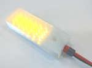

Lamp© 2018, ProtoIt Platform: INFENTO |  |
Beschrijving:
Alle type lampen kunnen op de driver worden aangeloten,
mits ze geschikt zijn voor 24 volt en niet meer dan 0,5 amère nemen.
Onderdelen:
Lamp
| Adres | I2C-adres van de driver.Standaard op adres 21 ingesteld. |
| Lamppoort | Afhankelijk van de driver, kunnen er één dan wel twee lampen worden aangesloten. De betreffende poorten zijn 1 en 2 genummerd.Standaard op poort 1 ingesteld. |
| Sterkte (lumen) | De uitgezonden lichtsterkte zoals die op de verpakking van de lamp is vermeld. Standaard op 600 lumen ingesteld. |
| Aan (%) | Helderheid voor als de lamp wordt aangezet. Helderheid in procenten van de ingestelde lumen (zie Instellingen). |
| Uit (%) | Helderheid voor als de lamp wordt uitgezet. Helderheid in procenten van de ingestelde lumen (zie Instellingen). |
| Aan (1/10 sec) | Tijd dat de lamp aan gaat of blijft (zie Manier). Standaard op het maximum ingesteld. |
| Aan (1/10 sec) | Tijd de lamp uit gaat of blijft (zie Manier). Standaard op volledig uit ingesteld. |
| Manier | De lamp kan met de Constante signalen op drie manieren worden geschakeld: - Aan/Uit: De lamp krijgt met het signaal Start wanneer? de voor aan ingestelde helderheid en met Stop wanneer? de voor uit ingestelde helderheid. De eventueel ingestelde tijden worden genegeerd. - Knipperen: De lamp knippert met de ingestelde helderheden voor aan en uit en voor de duur van de bijbehorende ingestelde tijden. Het knipperen begint met het signaal Start wanneer? en eindigt met Stop wanneer?. - Vervagen: De lamp licht langzaam op en vervaagt weer met de ingestelde helderheden voor aan en uit en voor de duur van de bijbehorende ingestelde tijden. Dit begint met het signaal Start wanneer? en eindigt met Stop wanneer?. Standaard op Aan/Uit ingesteld. |
| Start wanneer? | De bij Manier ingestelde functie van de lamp wordt gestart. Standaard op Direct ingesteld. |
| Stop wanneer? | De bij Manier ingestelde functie van de lamp wordt gestopt. Standaard op Nooit ingesteld. |